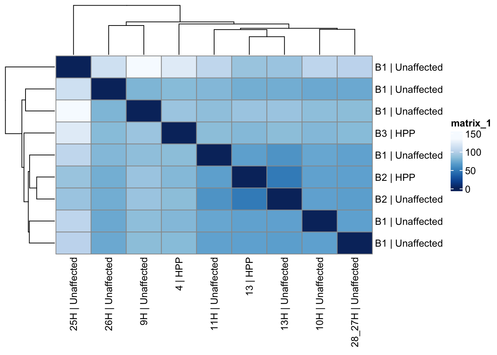
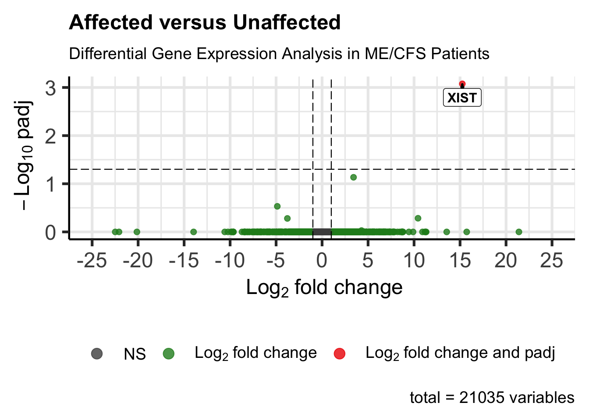

Subgroup vs Unaffected Differential Gene Expression (DGE) Analysis
Shaurita D. Hutchins
Last updated on 2025-07-15
Last updated: 2025-07-15
Checks: 7 0
Knit directory: mecfs-dge-analysis/
This reproducible R Markdown analysis was created with workflowr (version 1.7.1). The Checks tab describes the reproducibility checks that were applied when the results were created. The Past versions tab lists the development history.
Great! Since the R Markdown file has been committed to the Git repository, you know the exact version of the code that produced these results.
Great job! The global environment was empty. Objects defined in the global environment can affect the analysis in your R Markdown file in unknown ways. For reproduciblity it’s best to always run the code in an empty environment.
The command set.seed(20230618) was run prior to running
the code in the R Markdown file. Setting a seed ensures that any results
that rely on randomness, e.g. subsampling or permutations, are
reproducible.
Great job! Recording the operating system, R version, and package versions is critical for reproducibility.
Nice! There were no cached chunks for this analysis, so you can be confident that you successfully produced the results during this run.
Great job! Using relative paths to the files within your workflowr project makes it easier to run your code on other machines.
Great! You are using Git for version control. Tracking code development and connecting the code version to the results is critical for reproducibility.
The results in this page were generated with repository version 1373f8e. See the Past versions tab to see a history of the changes made to the R Markdown and HTML files.
Note that you need to be careful to ensure that all relevant files for
the analysis have been committed to Git prior to generating the results
(you can use wflow_publish or
wflow_git_commit). workflowr only checks the R Markdown
file, but you know if there are other scripts or data files that it
depends on. Below is the status of the Git repository when the results
were generated:
Ignored files:
Ignored: .DS_Store
Ignored: .Rhistory
Ignored: .Rproj.user/
Ignored: .github/.DS_Store
Ignored: .test/
Ignored: analysis/.DS_Store
Ignored: analysis/head.html
Ignored: configs/
Ignored: data/.DS_Store
Ignored: notebooks/
Ignored: output/.DS_Store
Ignored: output/all-samples-analysis/.DS_Store
Ignored: output/all-samples-analysis/all-condition-analysis.RData
Ignored: output/all-samples-analysis/batch-correction-limma/
Ignored: output/publication-analysis/.DS_Store
Ignored: output/publication-analysis/batch-correction-limma/plot-counts/padj-05/
Ignored: output/publication-analysis/batch-correction-limma/plot-counts/spta1-genes-of-interest/
Ignored: output/spta1-analysis/batch-correction-limma/plot-counts/spta1-genes-of-interest/
Ignored: renv/.DS_Store
Ignored: renv/library/
Ignored: renv/staging/
Ignored: src/
Untracked files:
Untracked: output/all-samples-analysis/Supplemental Figure 3. Genes of Interest Heatmap.png
Untracked: output/all-samples-analysis/missing_genes_interest_counts.csv
Untracked: output/publication-analysis/Supplemental Figure 4. Significant DEGs (Padj < 0.05).png
Untracked: output/publication-analysis/Supplemental Figure 4. Significant DEGs (Padj < 0.1).png.png
Untracked: output/publication-analysis/mecfs_deg_variant_network.png
Untracked: output/publication-analysis/missing_genes_interest_counts.csv
Untracked: output/subgroup-chrn-analysis/
Untracked: output/subgroup-hpp-analysis/
Untracked: output/subgroup-ion_channel-analysis/
Untracked: output/subgroup-mito-analysis/
Untracked: output/subgroup-rbc-analysis/
Unstaged changes:
Deleted: analysis/spta1-analysis.Rmd
Modified: code/helpers.R
Modified: data/Prioritized_Genes_From_WGS_2025_06_18.csv
Modified: output/all-samples-analysis/all-genes-heatmap.png
Modified: output/all-samples-analysis/analysis-volcano-plot.png
Modified: output/all-samples-analysis/counts_vst.csv
Modified: output/all-samples-analysis/counts_vst_limma.csv
Modified: output/all-samples-analysis/genes_of_interest_heatmap.png
Modified: output/all-samples-analysis/genes_of_interest_plot_counts_signals.csv
Modified: output/all-samples-analysis/madd_genes_of_interest.csv
Modified: output/all-samples-analysis/madd_genes_of_interest_heatmap.png
Modified: output/all-samples-analysis/mito_genes_of_interest.csv
Modified: output/all-samples-analysis/mito_genes_of_interest_heatmap.png
Modified: output/all-samples-analysis/mito_genes_of_interest_plot_counts_signals.csv
Modified: output/all-samples-analysis/other_genes_of_interest.csv
Modified: output/all-samples-analysis/res_aff_vs_unaff.csv
Modified: output/all-samples-analysis/res_aff_vs_unaff_df_genename.csv
Modified: output/all-samples-analysis/res_aff_vs_unaff_significant_mygene.csv
Modified: output/all-samples-analysis/res_aff_vs_unaff_significant_samples.csv
Modified: output/all-samples-analysis/res_spta1_vs_unaff_df_genename_05.csv
Modified: output/all-samples-analysis/res_spta1_vs_unaff_df_genename_padj05_lfc1.csv
Modified: output/all-samples-analysis/res_spta1_vs_unaff_df_genename_padj1.csv
Modified: output/all-samples-analysis/res_spta1_vs_unaff_df_genename_padj1_lfc1.csv
Modified: output/all-samples-analysis/significant_plot_counts_signals.csv
Modified: output/all-samples-analysis/slc4a1_genes_of_interest.csv
Modified: output/all-samples-analysis/slc4a1_genes_of_interest_heatmap.png
Modified: output/all-samples-analysis/slc4a1_genes_of_interest_plot_counts_signals.csv
Modified: output/all-samples-analysis/stringdb_combined_enrichment.csv
Modified: output/publication-analysis/Supplemental Figure 4. DEGs (Padj < 0.1).png
Deleted: output/publication-analysis/Supplemental Figure 4. Significant DEGs.png
Modified: output/publication-analysis/Supplemental Table 5. Significant Differentially Expressed Genes.csv
Modified: output/publication-analysis/batch-correction-limma/plot-counts/genes-of-interest/ACACB-subsetted-plot-counts.png
Modified: output/publication-analysis/batch-correction-limma/plot-counts/genes-of-interest/ACADM-subsetted-plot-counts.png
Modified: output/publication-analysis/batch-correction-limma/plot-counts/genes-of-interest/ACADVL-subsetted-plot-counts.png
Modified: output/publication-analysis/batch-correction-limma/plot-counts/genes-of-interest/ADM2-subsetted-plot-counts.png
Modified: output/publication-analysis/batch-correction-limma/plot-counts/genes-of-interest/ADORA2A-subsetted-plot-counts.png
Modified: output/publication-analysis/batch-correction-limma/plot-counts/genes-of-interest/ADORA2B-subsetted-plot-counts.png
Modified: output/publication-analysis/batch-correction-limma/plot-counts/genes-of-interest/ADRB2-subsetted-plot-counts.png
Modified: output/publication-analysis/batch-correction-limma/plot-counts/genes-of-interest/ATP1A1-subsetted-plot-counts.png
Modified: output/publication-analysis/batch-correction-limma/plot-counts/genes-of-interest/CALCB-subsetted-plot-counts.png
Modified: output/publication-analysis/batch-correction-limma/plot-counts/genes-of-interest/CCR5-subsetted-plot-counts.png
Modified: output/publication-analysis/batch-correction-limma/plot-counts/genes-of-interest/CHRFAM7A-subsetted-plot-counts.png
Modified: output/publication-analysis/batch-correction-limma/plot-counts/genes-of-interest/COL6A3-subsetted-plot-counts.png
Modified: output/publication-analysis/batch-correction-limma/plot-counts/genes-of-interest/COMT-subsetted-plot-counts.png
Modified: output/publication-analysis/batch-correction-limma/plot-counts/genes-of-interest/CPT1A-subsetted-plot-counts.png
Modified: output/publication-analysis/batch-correction-limma/plot-counts/genes-of-interest/CPT1B-subsetted-plot-counts.png
Modified: output/publication-analysis/batch-correction-limma/plot-counts/genes-of-interest/CPT1C-subsetted-plot-counts.png
Modified: output/publication-analysis/batch-correction-limma/plot-counts/genes-of-interest/CUBN-subsetted-plot-counts.png
Modified: output/publication-analysis/batch-correction-limma/plot-counts/genes-of-interest/CYTH2-subsetted-plot-counts.png
Modified: output/publication-analysis/batch-correction-limma/plot-counts/genes-of-interest/DENND1A-subsetted-plot-counts.png
Modified: output/publication-analysis/batch-correction-limma/plot-counts/genes-of-interest/DMXL2-subsetted-plot-counts.png
Modified: output/publication-analysis/batch-correction-limma/plot-counts/genes-of-interest/ELOVL4-subsetted-plot-counts.png
Modified: output/publication-analysis/batch-correction-limma/plot-counts/genes-of-interest/ENO3-subsetted-plot-counts.png
Modified: output/publication-analysis/batch-correction-limma/plot-counts/genes-of-interest/ETFB-subsetted-plot-counts.png
Modified: output/publication-analysis/batch-correction-limma/plot-counts/genes-of-interest/FKBP5-subsetted-plot-counts.png
Modified: output/publication-analysis/batch-correction-limma/plot-counts/genes-of-interest/G6PD-subsetted-plot-counts.png
Modified: output/publication-analysis/batch-correction-limma/plot-counts/genes-of-interest/GABRB3-subsetted-plot-counts.png
Modified: output/publication-analysis/batch-correction-limma/plot-counts/genes-of-interest/GIPR-subsetted-plot-counts.png
Modified: output/publication-analysis/batch-correction-limma/plot-counts/genes-of-interest/GLYCTK-subsetted-plot-counts.png
Modified: output/publication-analysis/batch-correction-limma/plot-counts/genes-of-interest/GPNMB-subsetted-plot-counts.png
Modified: output/publication-analysis/batch-correction-limma/plot-counts/genes-of-interest/HADHA-subsetted-plot-counts.png
Modified: output/publication-analysis/batch-correction-limma/plot-counts/genes-of-interest/HSPA1A-subsetted-plot-counts.png
Modified: output/publication-analysis/batch-correction-limma/plot-counts/genes-of-interest/HTR6-subsetted-plot-counts.png
Modified: output/publication-analysis/batch-correction-limma/plot-counts/genes-of-interest/IDO1-subsetted-plot-counts.png
Modified: output/publication-analysis/batch-correction-limma/plot-counts/genes-of-interest/IFNG-subsetted-plot-counts.png
Modified: output/publication-analysis/batch-correction-limma/plot-counts/genes-of-interest/IL10-subsetted-plot-counts.png
Modified: output/publication-analysis/batch-correction-limma/plot-counts/genes-of-interest/IL6-subsetted-plot-counts.png
Modified: output/publication-analysis/batch-correction-limma/plot-counts/genes-of-interest/KLHL7-subsetted-plot-counts.png
Modified: output/publication-analysis/batch-correction-limma/plot-counts/genes-of-interest/LMBRD1-subsetted-plot-counts.png
Modified: output/publication-analysis/batch-correction-limma/plot-counts/genes-of-interest/MADD-subsetted-plot-counts.png
Modified: output/publication-analysis/batch-correction-limma/plot-counts/genes-of-interest/MAPK1-subsetted-plot-counts.png
Modified: output/publication-analysis/batch-correction-limma/plot-counts/genes-of-interest/MCCC1-subsetted-plot-counts.png
Modified: output/publication-analysis/batch-correction-limma/plot-counts/genes-of-interest/MCCC2-subsetted-plot-counts.png
Modified: output/publication-analysis/batch-correction-limma/plot-counts/genes-of-interest/MINPP1-subsetted-plot-counts.png
Modified: output/publication-analysis/batch-correction-limma/plot-counts/genes-of-interest/MLYCD-subsetted-plot-counts.png
Modified: output/publication-analysis/batch-correction-limma/plot-counts/genes-of-interest/MMAA-subsetted-plot-counts.png
Modified: output/publication-analysis/batch-correction-limma/plot-counts/genes-of-interest/MMACHC-subsetted-plot-counts.png
Modified: output/publication-analysis/batch-correction-limma/plot-counts/genes-of-interest/MYH9-subsetted-plot-counts.png
Modified: output/publication-analysis/batch-correction-limma/plot-counts/genes-of-interest/NLRP3-subsetted-plot-counts.png
Modified: output/publication-analysis/batch-correction-limma/plot-counts/genes-of-interest/NR3C1-subsetted-plot-counts.png
Modified: output/publication-analysis/batch-correction-limma/plot-counts/genes-of-interest/NUP42-subsetted-plot-counts.png
Modified: output/publication-analysis/batch-correction-limma/plot-counts/genes-of-interest/OXTR-subsetted-plot-counts.png
Modified: output/publication-analysis/batch-correction-limma/plot-counts/genes-of-interest/P2RX7-subsetted-plot-counts.png
Modified: output/publication-analysis/batch-correction-limma/plot-counts/genes-of-interest/PCK2-subsetted-plot-counts.png
Modified: output/publication-analysis/batch-correction-limma/plot-counts/genes-of-interest/PGM1-subsetted-plot-counts.png
Modified: output/publication-analysis/batch-correction-limma/plot-counts/genes-of-interest/POLG-subsetted-plot-counts.png
Modified: output/publication-analysis/batch-correction-limma/plot-counts/genes-of-interest/PTPN22-subsetted-plot-counts.png
Modified: output/publication-analysis/batch-correction-limma/plot-counts/genes-of-interest/SLC12A3-subsetted-plot-counts.png
Modified: output/publication-analysis/batch-correction-limma/plot-counts/genes-of-interest/SLC25A20-subsetted-plot-counts.png
Modified: output/publication-analysis/batch-correction-limma/plot-counts/genes-of-interest/SLC7A9-subsetted-plot-counts.png
Modified: output/publication-analysis/batch-correction-limma/plot-counts/genes-of-interest/SMCR8-subsetted-plot-counts.png
Modified: output/publication-analysis/batch-correction-limma/plot-counts/genes-of-interest/SURF1-subsetted-plot-counts.png
Modified: output/publication-analysis/batch-correction-limma/plot-counts/genes-of-interest/SYT6-subsetted-plot-counts.png
Modified: output/publication-analysis/batch-correction-limma/plot-counts/genes-of-interest/TACO1-subsetted-plot-counts.png
Modified: output/publication-analysis/batch-correction-limma/plot-counts/genes-of-interest/TNF-subsetted-plot-counts.png
Modified: output/publication-analysis/batch-correction-limma/plot-counts/genes-of-interest/TOMM7-subsetted-plot-counts.png
Modified: output/publication-analysis/batch-correction-limma/plot-counts/genes-of-interest/UCP2-subsetted-plot-counts.png
Modified: output/publication-analysis/batch-correction-limma/plot-counts/genes-of-interest/VIPR2-subsetted-plot-counts.png
Modified: output/publication-analysis/batch-correction-limma/plot-counts/genes-of-interest/faceted_genes_of_interest_plot_counts.png
Modified: output/publication-analysis/batch-correction-limma/plot-counts/genes-of-interest/genes_of_interest_plot_counts_signals.csv
Modified: output/publication-analysis/counts_vst_limma_subsetted.csv
Modified: output/publication-analysis/counts_vst_subsetted.csv
Modified: output/publication-analysis/publication-analysis.RData
Modified: output/publication-analysis/res_aff_vs_unaff_df_sub_genename.csv
Modified: output/publication-analysis/res_aff_vs_unaff_df_sub_genename_05.csv
Modified: output/publication-analysis/res_aff_vs_unaff_df_sub_genename_padj1.csv
Modified: output/publication-analysis/res_aff_vs_unaff_df_sub_genename_padj1_lfc1.csv
Modified: output/publication-analysis/res_aff_vs_unaff_significant_subsetted_mygene.csv
Modified: output/publication-analysis/res_aff_vs_unaff_significant_subsetted_samples.csv
Modified: output/publication-analysis/res_aff_vs_unaff_sub.csv
Modified: output/publication-analysis/subsetted-analysis-volcano-plot.png
Modified: output/spta1-analysis/spta1-condition-analysis.RData
Note that any generated files, e.g. HTML, png, CSS, etc., are not included in this status report because it is ok for generated content to have uncommitted changes.
These are the previous versions of the repository in which changes were
made to the R Markdown (analysis/subgroup-analysis.Rmd) and
HTML (docs/subgroup-analysis.html) files. If you’ve
configured a remote Git repository (see ?wflow_git_remote),
click on the hyperlinks in the table below to view the files as they
were in that past version.
| File | Version | Author | Date | Message |
|---|---|---|---|---|
| Rmd | 1373f8e | sdhutchins | 2025-07-15 | Changes to Category. |
DGE Analysis Setup
Ensure you have all necessary libraries installed and load the helper code.
library(tidyverse) # Available via CRAN
library(DESeq2) # Available via Bioconductor
library(RColorBrewer) # Available via CRAN
library(pheatmap) # Available via CRAN
library(genefilter) # Available via Bioconductor
library(limma) # Available via Bioconductor
library(gprofiler2) # Available via CRAN
library(biomaRt) # Available via Bioconductor
library(plotly) # Available via CRAN
library(ggpubr) # Available via CRAN
library(rmarkdown) # Available via CRAN
library(clusterProfiler) # Available via Bioconductor
library(org.Hs.eg.db) # Available via Bioconductor
library(ggrepel) # Available via CRAN
library(ReactomePA) # Available via Bioconductor
library(mygene) # Available via Bioconductor
library(DOSE) # Available via Bioconductor
library(enrichR) # Available via Bioconductor
library(STRINGdb) # Available via Bioconductor
library(EnhancedVolcano)
library(ComplexHeatmap)Data Import
We will be importing counts data from the star-salmon pipeline and our metadata for the project which is hosted on Box. This also ensures data is properly ordered by sample id.
# Set subgroup name from RMarkdown parameter
subgroup_name <- params$subgroup_name
subgroup_lower <- tolower(subgroup_name)
outpath_var <- paste0("subgroup-", subgroup_lower, "-analysis")
# Load metadata and counts
sample_metadata <- read_csv("data/Metadata_2024_11_20.csv")
row.names(sample_metadata) <- sample_metadata$ID
counts <- read_tsv("data/star-salmon/salmon_merged_gene_counts_length_scaled.tsv")
# Load genes of interest
genes_of_interest <- read_csv("data/Prioritized_Genes_From_WGS_2024_11_19.csv") %>%
pull(Genes) %>%
unique() %>%
na.omit()
genes_of_interest <- unique(c(genes_of_interest, "CHI3L1"))
# Process counts
counts <- data.frame(counts, row.names = 1, check.names = FALSE)
counts$Ensembl_ID <- row.names(counts)
drop <- c("Ensembl_ID", "gene_name")
gene_info <- counts[, drop]
counts <- counts[, !(names(counts) %in% drop)]
# Identify affected subgroup members
sample_metadata <- sample_metadata %>%
mutate(Subgroup_list = strsplit(Subgroup, ",")) %>%
mutate(in_subgroup = purrr::map_lgl(Subgroup_list, ~ subgroup_name %in% trimws(.))) %>%
mutate(group = dplyr::case_when(
in_subgroup ~ subgroup_name,
Subgroup == "Unaffected" ~ "Unaffected",
TRUE ~ NA_character_
)) %>%
filter(!is.na(group))
# Align metadata and counts
sample_metadata$ID <- as.character(sample_metadata$ID)
filtered_sample_ids <- sample_metadata$ID
counts <- counts[, colnames(counts) %in% filtered_sample_ids, drop = FALSE]
counts <- counts[, match(sample_metadata$ID, colnames(counts))]
# Safety check: ensure order match
stopifnot(all(colnames(counts) == sample_metadata$ID))
# Retrieve gene annotations
genes_biomart <- retrieve_gene_info(values = gene_info$Ensembl_ID,
filters = "ensembl_gene_id_version")DESeq2 Analysis
# Ensure relevant columns are factors
sample_metadata <- sample_metadata %>%
mutate(
Family = factor(Family),
Affected = factor(Affected),
Batch = factor(Batch),
Sex = factor(Sex),
Ancestry = factor(Ancestry),
Category = factor(Category),
group = factor(group) # key design variable: subgroup vs. Unaffected
)
# Create DESeqDataSet using group as the main condition
dds <- DESeqDataSetFromMatrix(
countData = round(counts),
colData = sample_metadata,
design = ~ Batch + group
)
# Pre-filtering: keep genes with sufficient total counts
keep <- rowSums(counts(dds)) >= 50
dds <- dds[keep, ]
# Run DESeq
dds <- DESeq(dds)
# Normalize counts
counts_norm <- counts(dds, normalized = TRUE)Data transformation and visualization
Perform count data transformation by variance stabilizing transformation (vst) on normalized counts.
vsd <- vst(dds, blind = FALSE)Batch correction with limma
# Create output directory if it doesn't exist
dir.create(file.path("output", outpath_var), recursive = TRUE, showWarnings = FALSE)
# Extract VST-normalized counts
counts_vst <- assay(vsd)
write.csv(counts_vst, file.path("output", outpath_var, "counts_vst.csv"))
# Construct design matrix using group
mm <- model.matrix(~ Batch + group, colData(vsd))
# Remove batch effect
counts_vst_limma <- limma::removeBatchEffect(
counts_vst,
batch = vsd$Batch,
design = mm
)Coefficients not estimable: batch1 batch2 # Save corrected matrix
write.csv(counts_vst_limma, file = file.path("output", outpath_var, "counts_vst_limma.csv"))
# Store back in DESeqTransform object
vsd_limma <- vsd
assay(vsd_limma) <- counts_vst_limmaSample distances heatmap
# Compute sample distance matrix from VST + batch-corrected expression
sample_dists_all <- dist(t(assay(vsd_limma)))
sample_dist_matrix_all <- as.matrix(sample_dists_all)
# Label rows and columns using Batch and group
rownames(sample_dist_matrix_all) <- paste(vsd_limma$Batch, vsd_limma$group, sep = " | ")
colnames(sample_dist_matrix_all) <- paste(vsd_limma$ID, vsd_limma$group, sep = " | ")
# Define color palette
colors <- colorRampPalette(rev(brewer.pal(9, "Blues")))(255)
# Plot distance heatmap
pheatmap(sample_dist_matrix_all,
clustering_distance_rows = sample_dists_all,
clustering_distance_cols = sample_dists_all,
col = colors
)
Principal Components Analysis
Our below PCA shows that there does not seem to be a batch-related effect occurring after using limma. However, we can see that our 3 male samples are grouping. Given this knowledge, removing them from downstream analyses is the best option.
pca_data_all <- plotPCA(vsd_limma,
intgroup = c("Batch", "Variant"),
returnData = TRUE
)
percent_var_all <- round(100 * attr(pca_data_all, "percentVar"))
ggplot(pca_data_all, aes(PC1, PC2)) +
geom_point(aes(colour = Variant, shape = Batch), size = 4) +
xlab(paste0("PC1: ", percent_var_all[1], "% variance")) +
ylab(paste0("PC2: ", percent_var_all[2], "% variance")) +
coord_fixed()
# Run PCA on VST-transformed, batch-corrected data
pca_data_all <- plotPCA(vsd_limma,
intgroup = c("group"),
returnData = TRUE
)
percent_var_all <- round(100 * attr(pca_data_all, "percentVar"))
# Plot PCA with subgroup annotations
ggplot(pca_data_all, aes(PC1, PC2)) +
geom_point(aes(colour = group), size = 5) +
scale_colour_manual(
values = c(
"#1b9e77", "#d95f02", "#7570b3", "#e7298a", "#66a61e",
"#e6ab02", "#a6761d", "#666666"
),
name = "Group"
) +
geom_text_repel(aes(label = name), size = 3) +
xlab(paste0("PC1: ", percent_var_all[1], "% variance")) +
ylab(paste0("PC2: ", percent_var_all[2], "% variance")) +
ggthemes::theme_clean()
# Define custom annotation colors for heatmaps or pheatmap plots
study_group_colors <- c(
"ENE" = "#BFDFBF", # Light green
"IMM" = "#EEBFEE", # Light purple
"SOL" = "#FFFF33", # Yellow
"STR" = "#BFBFFF", # Light blue
"RBC" = "#FFD700", # Gold
"N/A" = "darkgray"
)
group_colors <- c(
"Potassium" = "#80B1D3",
"HPP" = "#FB8072",
"Ion_Channel" = "#FDB462",
"CHRN" = "#B3DE69",
"RBC" = "#BC80BD",
"Mito" = "#CCEBC5",
"Unaffected" = "gray40"
)
ann_colors <- list(
Batch = c(B1 = "purple", B2 = "firebrick", B3 = "goldenrod"),
Affected = c(Affected = "green4", Unaffected = "navy"),
Study_group = study_group_colors,
group = group_colors
)Comparison/Contrast of SPTA1 Affected vs Unaffected
# Perform differential expression analysis for selected subgroup vs Unaffected
res_subgroup_vs_unaff <- results(dds, contrast = c("group", subgroup_name, "Unaffected"))
# Define output file path
res_file_name <- file.path("output", outpath_var, paste0("res_", subgroup_lower, "_vs_unaff.csv"))
# Process and save results
res_subgroup_vs_unaff_df <- process_and_save_results(res_subgroup_vs_unaff, res_file_name)
# Sort by adjusted p-value
res_subgroup_vs_unaff_df <- arrange(res_subgroup_vs_unaff_df, padj)
# Filter: padj < 0.05
res_subgroup_vs_unaff_df_05 <- subset(res_subgroup_vs_unaff_df, padj < 0.05)
# Filter: padj < 0.1
res_subgroup_vs_unaff_df_1 <- subset(res_subgroup_vs_unaff_df, padj < 0.1)
# Further filter: padj < 0.1 & |log2FC| ≥ 1
res_subgroup_vs_unaff_df_padj1_lfc1 <- subset(
res_subgroup_vs_unaff_df_1,
abs(log2FoldChange) >= 1
)
# Further filter: padj < 0.05 & |log2FC| ≥ 1
res_subgroup_vs_unaff_df_padj05_lfc1 <- subset(
res_subgroup_vs_unaff_df_05,
abs(log2FoldChange) >= 1
)
# Print summary
summary(res_subgroup_vs_unaff)
out of 21035 with nonzero total read count
adjusted p-value < 0.1
LFC > 0 (up) : 2, 0.0095%
LFC < 0 (down) : 0, 0%
outliers [1] : 92, 0.44%
low counts [2] : 0, 0%
(mean count < 5)
[1] see 'cooksCutoff' argument of ?results
[2] see 'independentFiltering' argument of ?resultsHeatmap of Significant Genes
# Ensure results are ordered by adjusted p-value
res_subgroup_vs_unaff_df <- res_subgroup_vs_unaff_df[order(res_subgroup_vs_unaff_df$padj), ]
# Get top significant genes with padj < 0.1 and |log2FC| ≥ 1
topgenes_byensemblid <- rownames(res_subgroup_vs_unaff_df_padj1_lfc1)
# Subset normalized matrix
topgenes_mat <- assay(vsd_limma)[topgenes_byensemblid, , drop = FALSE]
# Normalize expression by row (gene) mean
if (nrow(topgenes_mat) == 1) {
topgenes_mat <- topgenes_mat - mean(topgenes_mat)
} else {
topgenes_mat <- topgenes_mat - rowMeans(topgenes_mat)
}
# Map Ensembl IDs to gene symbols
ensembl_to_gene <- setNames(gene_info$gene_name, gene_info$Ensembl_ID)
rownames(topgenes_mat) <- ensembl_to_gene[rownames(topgenes_mat)]
# Re-order matrix by significance
topgenes_mat <- topgenes_mat[order(res_subgroup_vs_unaff_df$padj[topgenes_byensemblid]), , drop = FALSE]
# Prepare annotation dataframe
annotation_df <- colData(vsd_limma) %>%
as.data.frame() %>%
dplyr::select(group, Affected)
# Define output path using lowercase subgroup name
outpath_subgroup <- paste0("subgroup-", tolower(subgroup_name), "-analysis")
# Ensure the directory exists
if (!dir.exists(file.path("output", outpath_subgroup))) {
dir.create(file.path("output", outpath_subgroup), recursive = TRUE)
}
# Save heatmap to PNG
heatmap_file <- file.path("output", outpath_subgroup, paste0(subgroup_name, "_padj1_heatmap.png"))
png(heatmap_file, width = 14, height = 10, units = "in", res = 1200)
ComplexHeatmap::pheatmap(
topgenes_mat,
color = colorRampPalette(rev(brewer.pal(n = 9, name = "RdYlBu")))(50),
annotation_col = annotation_df,
annotation_colors = ann_colors,
fontsize = 7,
angle_col = c("0"),
cellheight = 10,
cellwidth = 24,
border_color = "black",
heatmap_legend_param = list(title = "")
)
dev.off()quartz_off_screen
2 # Order results by adjusted p-value
res_subgroup_vs_unaff_df <- res_subgroup_vs_unaff_df[order(res_subgroup_vs_unaff_df$padj), ]
# Get top significant genes with |log2FoldChange| >= 1 and padj < 0.05
topgenes_byensemblid <- rownames(res_subgroup_vs_unaff_df_padj05_lfc1)
# Extract matrix subset
topgenes_subgroup_vs_unaff_05 <- assay(vsd_limma)[topgenes_byensemblid, , drop = FALSE]
# Normalize each row by subtracting its mean
if (nrow(topgenes_subgroup_vs_unaff_05) == 1) {
topgenes_subgroup_vs_unaff_05 <- topgenes_subgroup_vs_unaff_05 - mean(topgenes_subgroup_vs_unaff_05)
} else {
topgenes_subgroup_vs_unaff_05 <- topgenes_subgroup_vs_unaff_05 - rowMeans(topgenes_subgroup_vs_unaff_05)
}
# Map Ensembl IDs to gene names
ensembl_to_gene <- setNames(gene_info$gene_name, gene_info$Ensembl_ID)
current_ensembl_ids <- rownames(topgenes_subgroup_vs_unaff_05)
new_row_names <- ensembl_to_gene[current_ensembl_ids]
rownames(topgenes_subgroup_vs_unaff_05) <- new_row_names
# Order by significance
topgenes_subgroup_vs_unaff_05 <- topgenes_subgroup_vs_unaff_05[order(res_subgroup_vs_unaff_df$padj[topgenes_byensemblid]), , drop = FALSE]
# Prepare sample annotation
df <- colData(vsd_limma) %>%
as.data.frame() %>%
dplyr::select(group)
# Define output path using lowercase subgroup name
outpath_subgroup <- paste0("subgroup-", tolower(subgroup_name), "-analysis")
# Ensure the directory exists
if (!dir.exists(file.path("output", outpath_subgroup))) {
dir.create(file.path("output", outpath_subgroup), recursive = TRUE)
}
# Define file name
heatmap_file <- file.path("output", outpath_subgroup, paste0(subgroup_name, "_significant_padj05_heatmap.png"))
# Save heatmap to PNG
png(heatmap_file, width = 10, height = 8, units = "in", res = 300)
ComplexHeatmap::pheatmap(
topgenes_subgroup_vs_unaff_05,
color = colorRampPalette(rev(brewer.pal(n = 9, name = "RdYlBu")))(50),
annotation_col = df,
annotation_colors = ann_colors,
fontsize = 7,
angle_col = c("0"),
cellheight = 10,
cellwidth = 24,
border_color = "black",
heatmap_legend_param = list(title = "")
)
dev.off()quartz_off_screen
2 # Extract relevant columns from genes_biomart (first and last columns)
gb_df <- genes_biomart[, c(1, ncol(genes_biomart))]
# Copy results dataframe to add gene annotations
res_subgroup_vs_unaff_df_genename <- res_subgroup_vs_unaff_df
# Add Ensembl IDs as a new column
res_subgroup_vs_unaff_df_genename$Ensembl_ID <- row.names(res_subgroup_vs_unaff_df)
# Merge gene annotation information from gene_info using Ensembl IDs
res_subgroup_vs_unaff_df_genename <- merge(
x = res_subgroup_vs_unaff_df_genename,
y = gene_info,
by = "Ensembl_ID",
all.x = TRUE
)
# Reorder columns to place gene_name and Ensembl_ID at the front
res_subgroup_vs_unaff_df_genename <- res_subgroup_vs_unaff_df_genename[
,
c("gene_name", "Ensembl_ID", setdiff(names(res_subgroup_vs_unaff_df_genename), c("gene_name", "Ensembl_ID")))
]
# Sort the dataframe by adjusted p-value (padj)
res_subgroup_vs_unaff_df_genename <- res_subgroup_vs_unaff_df_genename[
order(res_subgroup_vs_unaff_df_genename$padj),
]
# Define output file path for the annotated results
res_file_genename <- file.path(
"output", outpath_var,
"res_subgroup_vs_unaff_df_genename.csv"
)
# Save the annotated results to a CSV file
write.csv(res_subgroup_vs_unaff_df_genename, file = res_file_genename, row.names = FALSE)Volcano Plot
# Parameters for the function
res_data <- res_subgroup_vs_unaff_df_genename
gene_labels <- "gene_name"
x_col <- "log2FoldChange"
y_col <- "padj"
select_genes <- ""
xlab_text <- bquote(~ Log[2] ~ "fold change")
ylab_text <- bquote(~ -Log[10] ~ "padj")
xlim_range <- c(-25, 25)
ylim_range <- c(0, 7)
output_volcano_file <- file.path("output", outpath_var, paste0("volcano-plot-", tolower(subgroup_name), ".png"))
# Generate and save the volcano plot
generate_volcano_plot(
res_data = res_data, gene_labels = gene_labels, x_col = x_col,
y_col = y_col, select_genes = select_genes, xlab_text = xlab_text,
ylab_text = ylab_text, p_cutoff = 0.05, fc_cutoff = 1.0,
xlim_range = xlim_range, ylim_range = ylim_range,
output_file = output_volcano_file
)
# Process and save the data
process_and_save_filtered_results(res_subgroup_vs_unaff_df_genename,
padj_threshold = 0.05, lfc_threshold = NULL,
outpath = outpath_var,
filename = paste0("res_", subgroup_lower, "_vs_unaff_df_genename_05.csv")
)
process_and_save_filtered_results(res_subgroup_vs_unaff_df_genename,
padj_threshold = 0.05, lfc_threshold = 1,
outpath = outpath_var,
filename = paste0("res_", subgroup_lower, "_vs_unaff_df_genename_padj05_lfc1.csv")
)
process_and_save_filtered_results(res_subgroup_vs_unaff_df_genename,
padj_threshold = 0.1, lfc_threshold = NULL,
outpath = outpath_var,
filename = paste0("res_", subgroup_lower, "_vs_unaff_df_genename_padj1.csv")
)
process_and_save_filtered_results(res_subgroup_vs_unaff_df_genename,
padj_threshold = 0.1, lfc_threshold = 1,
outpath = outpath_var,
filename = paste0("res_", subgroup_lower, "_vs_unaff_df_genename_padj1_lfc1.csv")
)# Filter gene names that are not Ensembl IDs
filtered_gene_names <- res_subgroup_vs_unaff_df_genename$gene_name[!grepl("^ENS", res_subgroup_vs_unaff_df_genename$gene_name)]
# Generate MA plot
maplot <- generate_ma_plot(
data = res_subgroup_vs_unaff_df,
genenames = as.vector(res_subgroup_vs_unaff_df_genename$gene_name),
main_title = paste0(subgroup_name, " vs Unaffected MA Plot"),
top_genes = 30
)
maplot
# Extract significant genes from the MA plot
significant_data <- maplot$data %>%
filter(grepl("Up|Down", sig)) %>%
mutate(direction = ifelse(grepl("Up", sig), "Up", "Down")) %>%
dplyr::select(-sig)
# Display a paged table of significant genes
paged_table(as.data.frame(significant_data), options = list(rows.print = 30))# Save significant genes to CSV
output_maplot_siggenes <- file.path(
"output", outpath_var,
paste0("res_", subgroup_lower, "_vs_unaff_siggenes.csv")
)
write.csv(significant_data, file = output_maplot_siggenes, row.names = FALSE)# Initialize STRINGdb
string_db <- STRINGdb$new(
version = "11.5",
species = 9606,
score_threshold = 100,
network_type = "full",
input_directory = ""
)
# Map significant genes to STRING IDs
mapped_degs <- string_db$map(significant_data, "name", removeUnmappedRows = TRUE)Warning: we couldn't map to STRING 100% of your identifiersif (nrow(mapped_degs) > 0) {
# Limit to top 29 STRING IDs
hits <- head(mapped_degs$STRING_id, 29)
# Add logFC-based coloring
mapped_degs_dec <- string_db$add_diff_exp_color(mapped_degs, logFcColStr = "lfc")
# Generate payload and plot network
payload_id <- string_db$post_payload(mapped_degs_dec$STRING_id, colors = mapped_degs_dec$color)
string_db$plot_network(hits, payload_id = payload_id)
} else {
message("No STRING IDs mapped — skipping STRING network plot.")
}Save data
outpath_subgroup <- paste0("subgroup-", tolower(subgroup_name), "-analysis")
save.image(file = file.path("output", outpath_subgroup, paste0(subgroup_name, "-subgroup-analysis.RData")))
sessionInfo()R version 4.4.0 (2024-04-24)
Platform: x86_64-apple-darwin20
Running under: macOS 15.5
Matrix products: default
BLAS: /Library/Frameworks/R.framework/Versions/4.4-x86_64/Resources/lib/libRblas.0.dylib
LAPACK: /Library/Frameworks/R.framework/Versions/4.4-x86_64/Resources/lib/libRlapack.dylib; LAPACK version 3.12.0
locale:
[1] en_US.UTF-8/en_US.UTF-8/en_US.UTF-8/C/en_US.UTF-8/en_US.UTF-8
time zone: America/Chicago
tzcode source: internal
attached base packages:
[1] grid stats4 stats graphics grDevices datasets utils
[8] methods base
other attached packages:
[1] ComplexHeatmap_2.20.0 EnhancedVolcano_1.22.0
[3] STRINGdb_2.16.4 enrichR_3.2
[5] DOSE_3.30.1 mygene_1.40.0
[7] txdbmaker_1.0.1 GenomicFeatures_1.56.0
[9] ReactomePA_1.48.0 ggrepel_0.9.5
[11] org.Hs.eg.db_3.19.1 AnnotationDbi_1.66.0
[13] clusterProfiler_4.12.0 rmarkdown_2.27
[15] ggpubr_0.6.0 plotly_4.10.4
[17] biomaRt_2.60.1 gprofiler2_0.2.3
[19] limma_3.60.3 genefilter_1.86.0
[21] pheatmap_1.0.12 RColorBrewer_1.1-3
[23] DESeq2_1.44.0 SummarizedExperiment_1.34.0
[25] Biobase_2.64.0 MatrixGenerics_1.16.0
[27] matrixStats_1.3.0 GenomicRanges_1.56.1
[29] GenomeInfoDb_1.40.1 IRanges_2.38.1
[31] S4Vectors_0.42.1 BiocGenerics_0.50.0
[33] lubridate_1.9.3 forcats_1.0.0
[35] stringr_1.5.1 dplyr_1.1.4
[37] purrr_1.0.2 readr_2.1.5
[39] tidyr_1.3.1 tibble_3.2.1
[41] ggplot2_3.5.1 tidyverse_2.0.0
[43] workflowr_1.7.1
loaded via a namespace (and not attached):
[1] fs_1.6.4 bitops_1.0-7 enrichplot_1.24.0
[4] doParallel_1.0.17 HDO.db_0.99.1 httr_1.4.7
[7] tools_4.4.0 backports_1.5.0 utf8_1.2.4
[10] R6_2.5.1 lazyeval_0.2.2 GetoptLong_1.0.5
[13] withr_3.0.2 graphite_1.50.0 prettyunits_1.2.0
[16] gridExtra_2.3 textshaping_0.4.0 cli_3.6.3
[19] scatterpie_0.2.3 labeling_0.4.3 sass_0.4.9
[22] systemfonts_1.1.0 Rsamtools_2.20.0 yulab.utils_0.1.4
[25] gson_0.1.0 foreign_0.8-86 WriteXLS_6.6.0
[28] plotrix_3.8-4 rstudioapi_0.16.0 RSQLite_2.3.7
[31] shape_1.4.6.1 generics_0.1.3 gridGraphics_0.5-1
[34] BiocIO_1.14.0 vroom_1.6.5 gtools_3.9.5
[37] car_3.1-2 GO.db_3.19.1 Matrix_1.7-0
[40] fansi_1.0.6 abind_1.4-5 lifecycle_1.0.4
[43] whisker_0.4.1 yaml_2.3.9 carData_3.0-5
[46] gplots_3.1.3.1 qvalue_2.36.0 SparseArray_1.4.8
[49] BiocFileCache_2.12.0 blob_1.2.4 promises_1.3.3
[52] crayon_1.5.3 lattice_0.22-6 cowplot_1.1.3
[55] annotate_1.82.0 KEGGREST_1.44.1 pillar_1.9.0
[58] knitr_1.48 fgsea_1.30.0 rjson_0.2.21
[61] codetools_0.2-20 fastmatch_1.1-4 glue_1.7.0
[64] getPass_0.2-4 ggfun_0.1.5 data.table_1.15.4
[67] vctrs_0.6.5 png_0.1-8 treeio_1.28.0
[70] gtable_0.3.5 gsubfn_0.7 cachem_1.1.0
[73] xfun_0.45 S4Arrays_1.4.1 tidygraph_1.3.1
[76] survival_3.5-8 iterators_1.0.14 statmod_1.5.0
[79] nlme_3.1-164 ggtree_3.12.0 bit64_4.0.5
[82] progress_1.2.3 filelock_1.0.3 rprojroot_2.0.4
[85] bslib_0.9.0 KernSmooth_2.23-22 rpart_4.1.23
[88] colorspace_2.1-0 DBI_1.2.3 Hmisc_5.1-3
[91] nnet_7.3-19 tidyselect_1.2.1 processx_3.8.4
[94] chron_2.3-61 bit_4.0.5 compiler_4.4.0
[97] curl_5.2.1 git2r_0.33.0 httr2_1.0.1
[100] graph_1.82.0 htmlTable_2.4.2 xml2_1.3.6
[103] DelayedArray_0.30.1 shadowtext_0.1.3 rtracklayer_1.64.0
[106] caTools_1.18.2 checkmate_2.3.1 scales_1.3.0
[109] callr_3.7.6 rappdirs_0.3.3 digest_0.6.36
[112] XVector_0.44.0 htmltools_0.5.8.1 pkgconfig_2.0.3
[115] base64enc_0.1-3 highr_0.11 dbplyr_2.5.0
[118] fastmap_1.2.0 ggthemes_5.1.0 GlobalOptions_0.1.2
[121] rlang_1.1.4 htmlwidgets_1.6.4 UCSC.utils_1.0.0
[124] farver_2.1.2 jquerylib_0.1.4 jsonlite_1.8.8
[127] BiocParallel_1.38.0 GOSemSim_2.30.0 RCurl_1.98-1.16
[130] magrittr_2.0.3 Formula_1.2-5 GenomeInfoDbData_1.2.12
[133] ggplotify_0.1.2 patchwork_1.2.0 munsell_0.5.1
[136] Rcpp_1.0.12 proto_1.0.0 ape_5.8
[139] viridis_0.6.5 sqldf_0.4-11 stringi_1.8.4
[142] ggraph_2.2.1 zlibbioc_1.50.0 MASS_7.3-60.2
[145] plyr_1.8.9 parallel_4.4.0 Biostrings_2.72.1
[148] graphlayouts_1.1.1 splines_4.4.0 hash_2.2.6.3
[151] circlize_0.4.16 hms_1.1.3 locfit_1.5-9.10
[154] ps_1.7.7 igraph_2.1.4 ggsignif_0.6.4
[157] reshape2_1.4.4 XML_3.99-0.17 evaluate_1.0.4
[160] renv_1.0.7 BiocManager_1.30.23 foreach_1.5.2
[163] tzdb_0.4.0 tweenr_2.0.3 httpuv_1.6.15
[166] polyclip_1.10-6 clue_0.3-65 ggforce_0.4.2
[169] broom_1.0.6 xtable_1.8-4 restfulr_0.0.15
[172] reactome.db_1.88.0 tidytree_0.4.6 rstatix_0.7.2
[175] later_1.3.2 ragg_1.3.2 viridisLite_0.4.2
[178] aplot_0.2.3 memoise_2.0.1 GenomicAlignments_1.40.0
[181] cluster_2.1.6 timechange_0.3.0